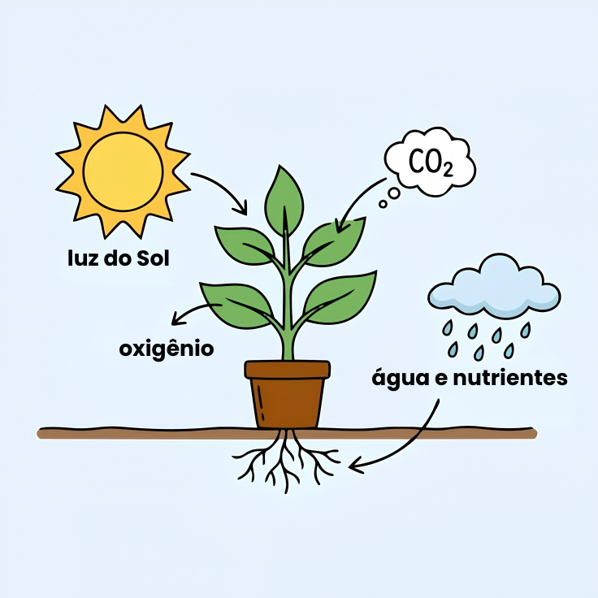

☀️ A importância da luz
A luz é muito importante para as plantas. Ela fornece a energia que elas precisam para produzir seu próprio alimento.
🍃 A cozinha mágica da planta
A fotossíntese é como se a planta fosse uma cozinheira preparando seu próprio alimento!

Nas folhas, a planta usa a energia da luz para transformar água e gás carbônico em glicose, um açúcar que ela usa como alimento e fonte de energia. Durante esse processo, ela também libera oxigênio para o ambiente.
🌱 Cada planta tem sua necessidade de luz
Assim como cada planta pode precisar de uma quantidade diferente de água, elas também podem ter necessidades diferentes de luz.
Cactos
Geralmente gostam de bastante luz.
Tropicais
Muitas preferem bastante claridade, mas sem sol direto intenso.
Orquídeas
Geralmente gostam de bastante claridade, evitando o sol direto intenso.
O que isso tem a ver com o Meu PlantAmigo?
O Meu PlantAmigo acompanha principalmente a umidade
do solo para ajudar nos cuidados com a planta.
Mas saber se ela gosta de mais ou menos luz é com você!
Juntos cuidaremos bem da sua plantinha.
💡 Você sabia?
As folhas parecem verdes porque refletem parte da luz verde que chega até elas.
☀️ Agora você já sabe por que a luz é tão importante!
Que tal testar o que você aprendeu sobre luz e fotossíntese?
Fazer o quiz